Explore Lille
A Brief History
Lille grew at the crossroads of Flemish cloth towns and French royal authority, passing between Burgundian, Spanish, and French crowns before Louis XIV seized it in 1667. Vauban fortified the citadel, while nineteenth-century mills and railways made it an industrial hub of the Nord. Flemish step-gables, the Grand Place belfry, and the Palais des Beaux-Arts reflect how a border city blended Low Countries commerce with French administrative and mining wealth.
Attractions Map
Top Sights & Activities
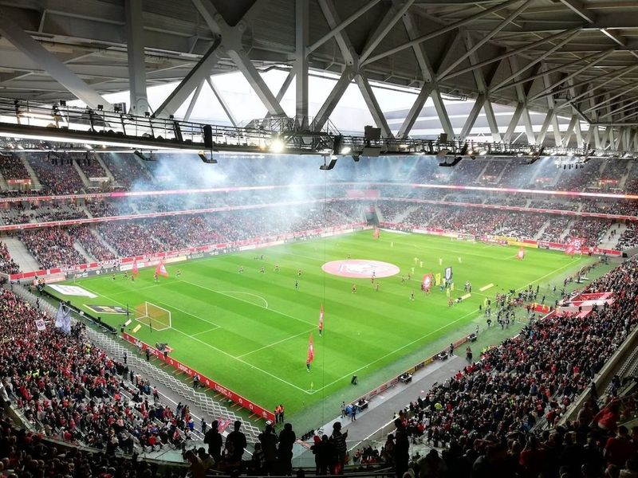
Decathlon Arena - Stade Pierre Mauroy
Stade Pierre Mauroy is a prominent stadium in Lille, serving as the home ground for LOSC Lille Metropole soccer team. With a seating capacity of 50,000, it has hosted various events including major concerts, rugby matches, and indoor sports competitions. The stadium gained recognition during EURO 2016 by hosting six matches, including the quarter-final between Wales and Belgium.
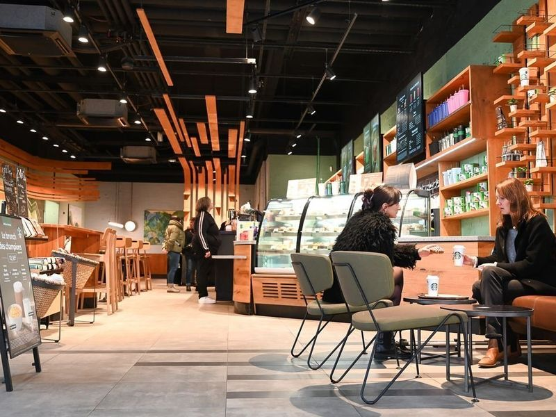
Centre Commercial V2
Centre Commercial V2 is a popular shopping destination for locals, known as the largest shopping center in the city. It offers free parking and accessible bathrooms. The supermarket is expansive with two floors and there are various shops including a large bookshop, clothing stores, and more. Decathlon V2 is a highlight with its wide range of sports offerings under one roof. The staff are friendly and the overall experience is enjoyable.
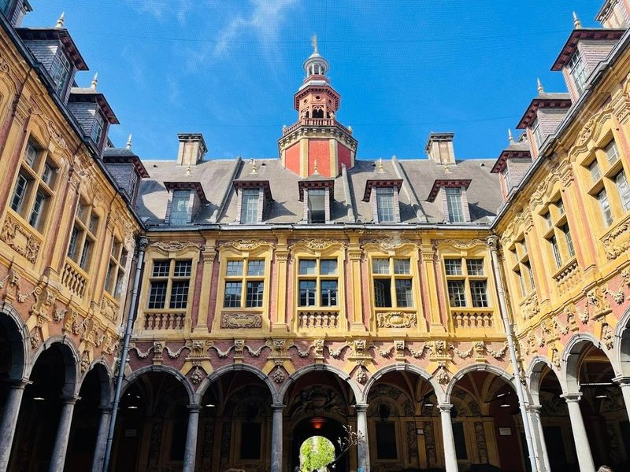
La Vieille Bourse
La Vieille Bourse in Lille, France is a remarkable Renaissance-era stock exchange building that holds great historical significance. It was once the center of commercial and financial activities in the city, showcasing its prosperous trading history. The building consists of 24 identical houses surrounding a courtyard, which serves as a focal point for various city events and gatherings. Its ornate architecture and gold Mercury statue on the campanile add to its grandeur.
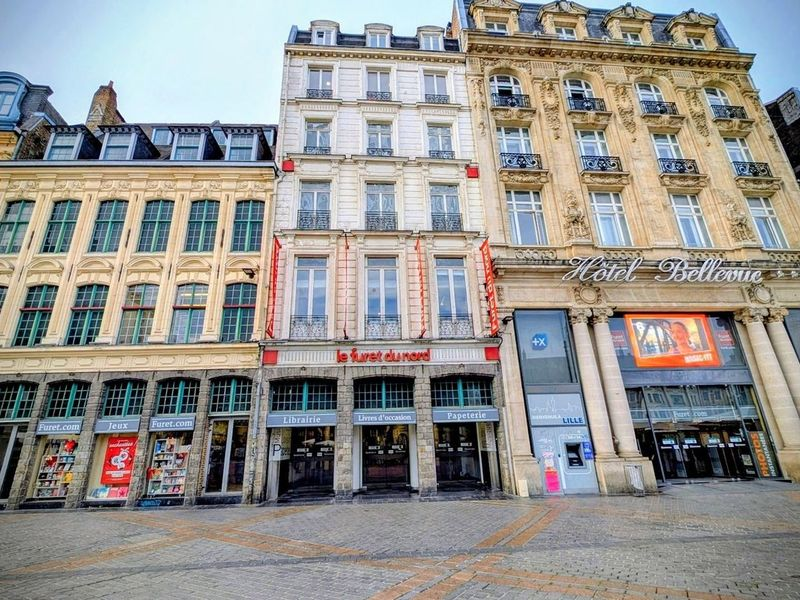
Furet du Nord
Furet du Nord is a renowned bookstore located in Lille, offering an extensive collection of books and other items across its eight floors. It is often compared to the French equivalent of Barnes and Noble, attracting a large crowd due to its unmatched selection of books, games, and various related products. Additionally, the store boasts a vast array of children's books suitable for all age groups.
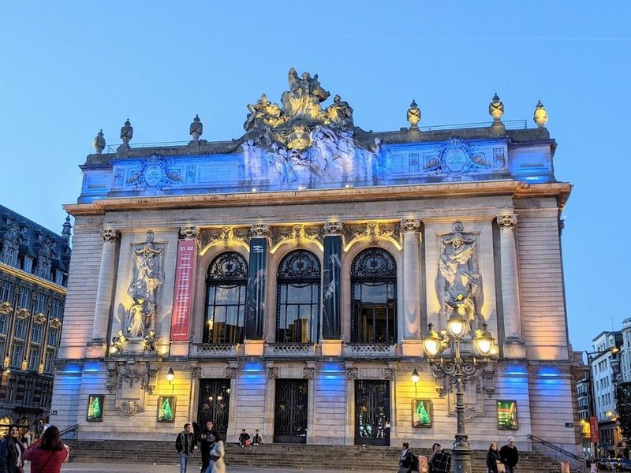
Lille Opera
Lille Opera, situated in Lille, France, is a remarkable neoclassical building that was constructed between 1907 and 1913 to replace the former opera house destroyed by fire in 1903. Designed by architect Louis Marie Cordonnier, this Belle Epoque masterpiece features an intricate pediment relief and houses impressive interior works by sculptor Edgar-Henri Boutry. The opera house is a prominent venue for opera, ballet, and classical music performances.
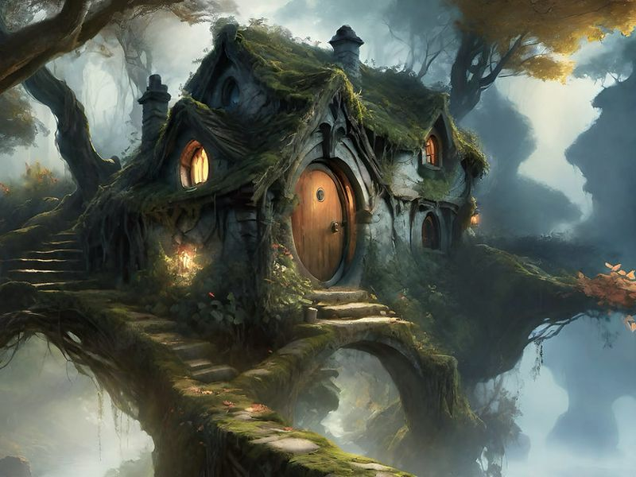
John Doe Escape Game
An exciting and immersive escape room experience that offers various intriguing scenarios for groups to solve puzzles and complete missions. The site is catalogued as a tourist attraction. The site is catalogued as a tourist attraction. The site is catalogued as a tourist attraction.
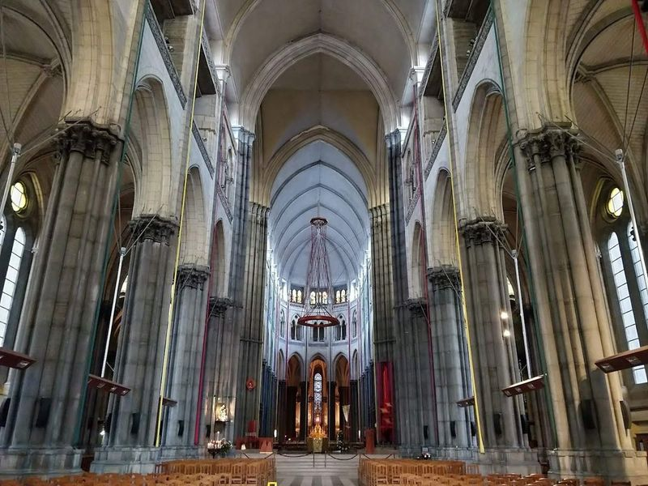
Notre-Dame-de-la-Treille Cathedral
Notre-Dame-de-la-Treille Cathedral in Lille is a 19th-century Gothic revival structure dedicated to the Virgin Mary. Construction began in 1854 but was only completed in 1999, with a unique main facade designed by local architect Pierre-Louis Carlier and engineer Peter Rice. The cathedral houses a crypt and a sacred art museum featuring works by artists such as Warhol and Baselitz.
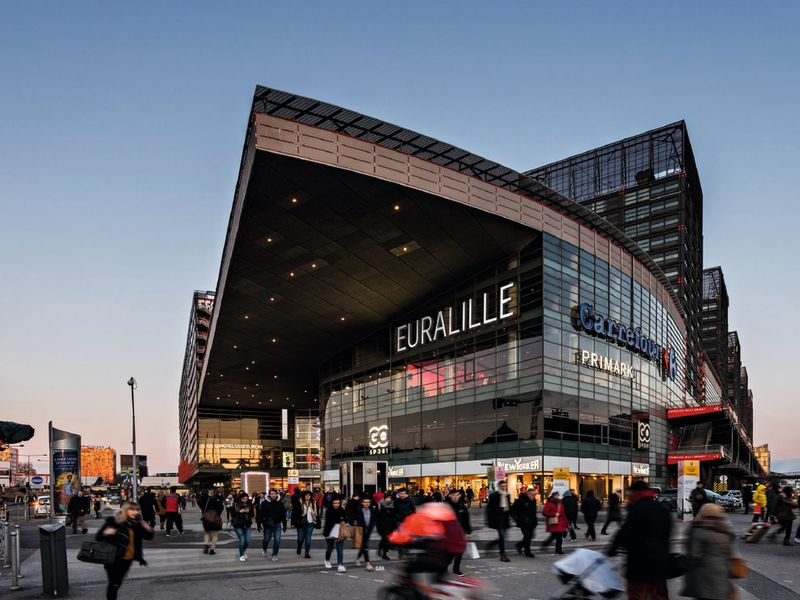
Westfield Euralille
Westfield Euralille is a modern and expansive urban complex located 750 meters east of the city center. It is situated between Lille's main train stations and encompasses a business district, residential area, hotels, shops, restaurants, and entertainment venues. The district features the Euravenir tower, an architectural marvel that visually connects urban ensembles through its unique geometry and volumetry.
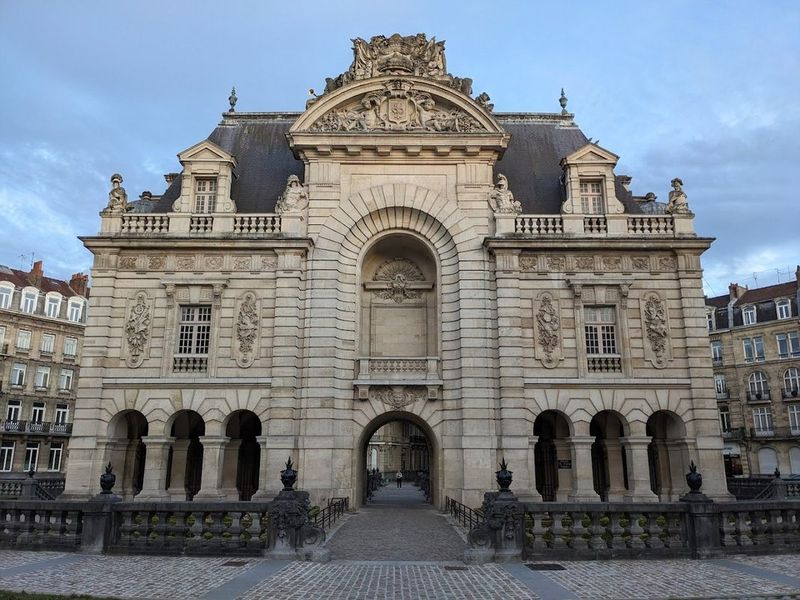
Porte de Paris
The Porte de Paris is a grand arch monument in Lille, built in the 17th century to commemorate Louis XVI's capture of the city. It was part of the fortified walls constructed after Louis XIV captured Lille, and it remains one of the few remaining gates from that time. Designed by renowned architect Simon Vollant, this monumental gate features baroque angels at the top celebrating victory with copper trumpets, as well as sculptures of Mars and Hercules symbolizing war and strength.
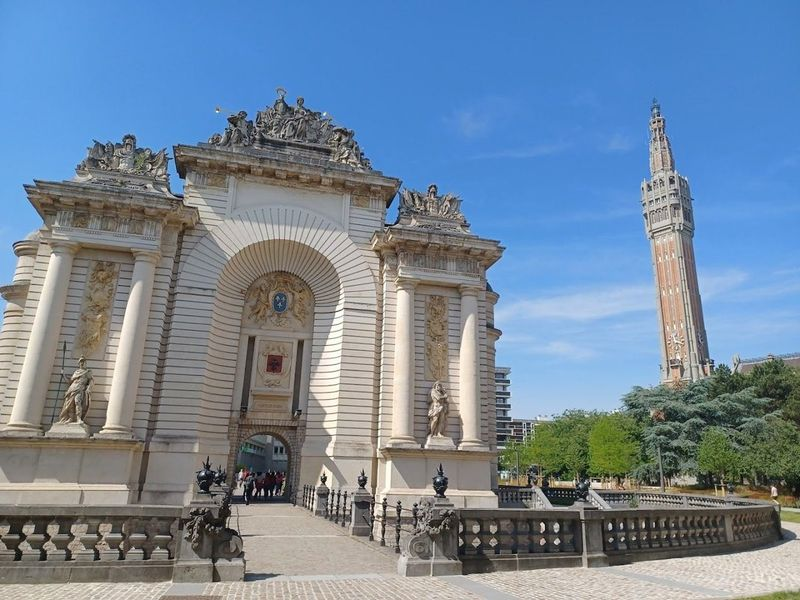
Beffroi de Lille
The Beffroi de Lille, also known as the Belfry of Lille, is a towering structure and a significant landmark in Lille, France. This bell tower stands at an impressive height of 104 meters and offers panoramic vistas of the city and valley from its observation deck. Designed by renowned architect Emile Dubuisson, it showcases mesmerizing Art Deco architecture and is a UNESCO World Heritage Site.
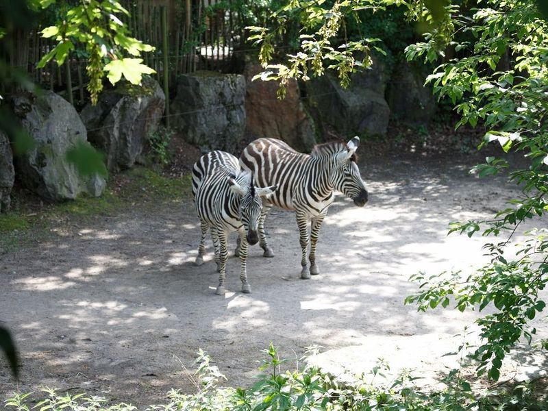
Zoo de Lille
in a 3.5-hectare green setting, Zoo de Lille is a compact and lush zoo that showcases a diverse range of birds, mammals, and reptiles in themed areas. It has gained recognition as one of the top parks in Lille, France for its impressive collection of animals from various species. travellers can immerse themselves in an enriching and exotic experience while exploring over 100 wild species from around the world.
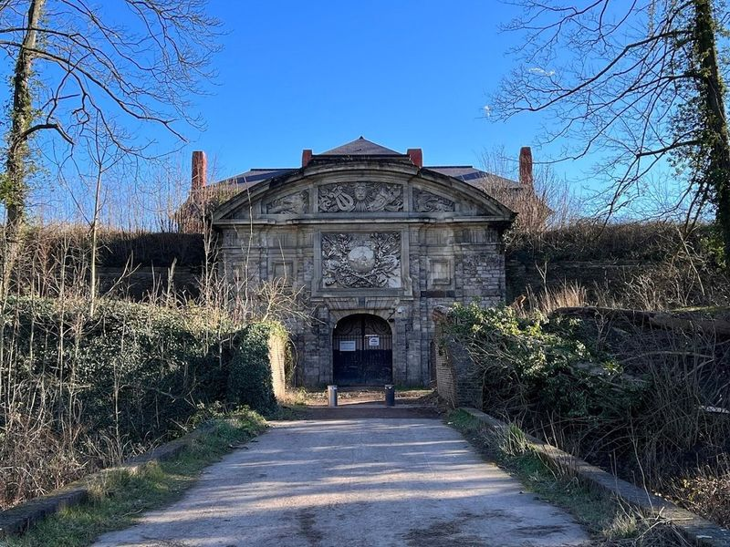
Citadelle de Lille
The Citadel of Lille, situated in the northern French city of Lille, is a remarkable 17th-century fortress designed by the renowned military engineer Sebastien Le Prestre de Vauban. Often referred to as the 'Queen of Citadels,' it boasts a star-shaped layout that provided innovative defensive capabilities against artillery attacks. This historic site offers monthly guided tours and is surrounded by a scenic public park.
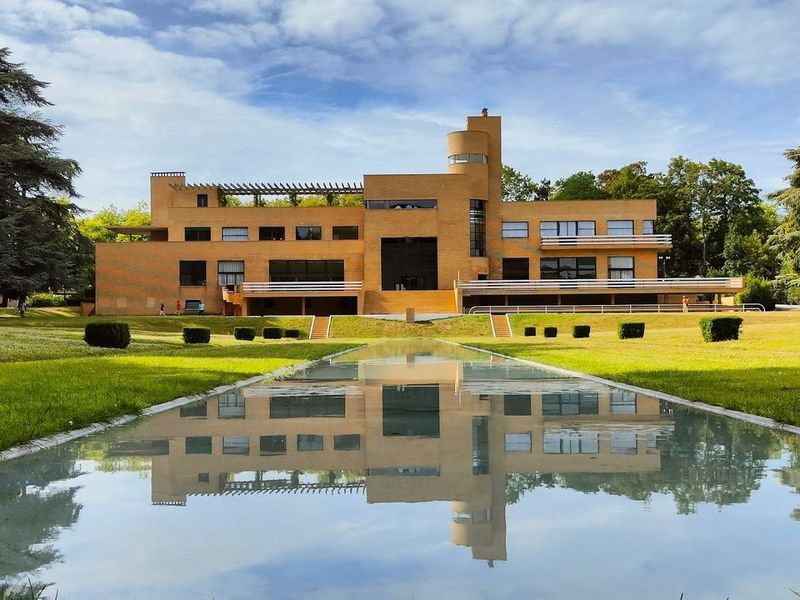
Villa Cavrois
Villa Cavrois, a 1932 modernist mansion located between Roubaix and Croix, has been meticulously restored and is now open to the public. Designed by architect Robert Mallet-Stevens for industrialist Paul Cavrois, this Art Deco house boasts sleek lines and period furniture. The villa's interior reflects a colorful and geometric style that captures the essence of its time.
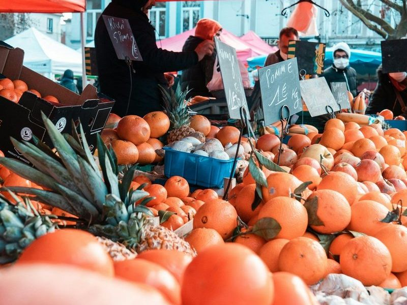
Marché de Wazemmes
Marché de Wazemmes is a and traditional market located in Place Nouvelle Aventure, considered important markets in northern France. It features stalls selling regional sausages, cheeses, vegetables, colorful flowers, exotic materials, antiques, and more. The market is known for its large outdoor gatherings on Tuesday, Thursday, and Sunday mornings.